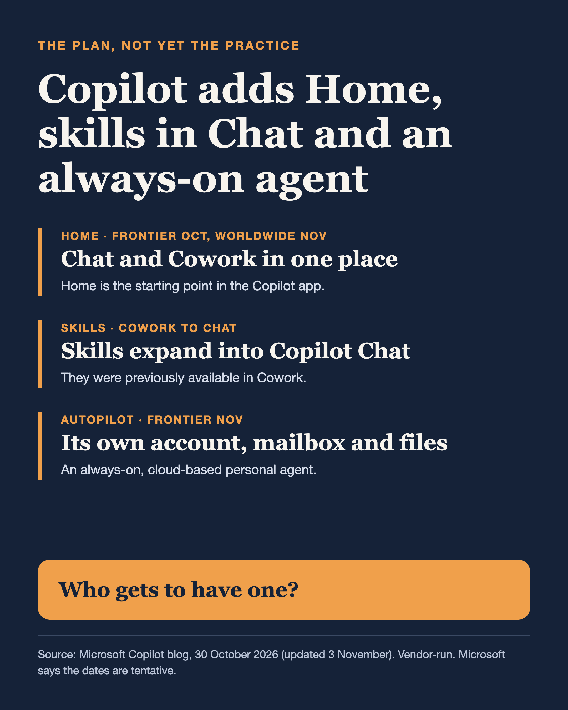

Copilot gets Home, skills in Chat and an always-on agent
Microsoft's Copilot app now brings Chat and Cowork into one place. An always-on agent with its own mailbox is due on Frontier in November.
Microsoft's October update, published on 30 October, describes Home as the starting point in the Copilot app, bringing Chat and Cowork together. Skills are expanding from Cowork into Copilot Chat. Autopilot is described as an always-on, cloud-based personal agent, and Microsoft says it has its own account, mailbox and files.
Home rolls out to Frontier in October and worldwide in November. Autopilot reaches Frontier in November. Microsoft notes that the dates in the article are tentative and subject to change.
This comes from Microsoft itself, so it's the plan and not how any of it works in practice yet.
If you're running AI adoption, the shift is from asking Copilot a question to handing it a task. An agent with its own mailbox raises questions I'd want answered before anyone turns it on: who can have one, what it can reach, and who answers for what it sends.
